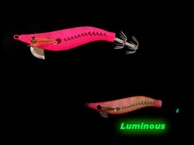

Egis Low Cost
Inicio
Señuelos
YAMASHITA
DTD
YO-ZURI
LETOYO
KINGDOM
SQUID KING
OTROS
Componentes
Color Egis
Acerca de
Letoyo Modelo R – Análisis completo

🎨 Características
Color base:
Rosa intenso o fucsia, con tonos metálicos o perlados en el vientre.
Detalles:
Patrones oscuros en forma de espina dorsal (imitando sombreado natural del cuerpo del camarón)..
Brillo:
Brillo luminiscente verde
Acabado:
Recubrimiento textil que mejora la fricción con el agua y simula la piel de un camarón.
🌤️ Condiciones ideales de uso
☁️
Días nublados o aguas ligeramente turbias:
El color vibrante compensa la falta de luz solar y mantiene el atractivo visual.
🌅
Atardecer o amanecer:
El contraste del rosa funciona muy bien con poca luz natural, llamando la atención de calamares activos.
🌙
Noche:
El brillo verde luminoso es clave. Permite que el Egi sea visible incluso en aguas con baja transparencia.
🪸
Fondos rocosos o mixtos:
El tono rosa resalta fuertemente en contraste, ayudando a atraer desde mayor distancia.
🧠 Comportamiento esperado
👉 Alta atracción visual: Este Modelo Rstá diseñado para provocar ataques instintivos, más que para parecer natural.
👉 Ideal cuando los calamares están activos o cazando agresivamente, especialmente durante horas bajas de luz.
👉 Su luminiscencia actúa como un faro en la oscuridad, manteniendo el interés incluso si hay otros estímulos cerca.
⚙️ Resumen práctico
Condición
Eficiencia
☀️🌊 Día soleado / agua clara
🟡 Media
☁️💙 Día nublado / aguas azules
🟢 alta
🌙🌑 Noche / aguas oscuras
🟢🟢 Muy alta
🦑😴 Calamares pasivos
🟡 Puede ser demasiado vistoso
🦑🔥 Calamares agresivos
🔥 Excelente
🛒 Comprar opción 1
🛒 Comprar opción 2
🛒 Range Hunter
🛒 Neon Bright
🛒 Egi OH Live Neon